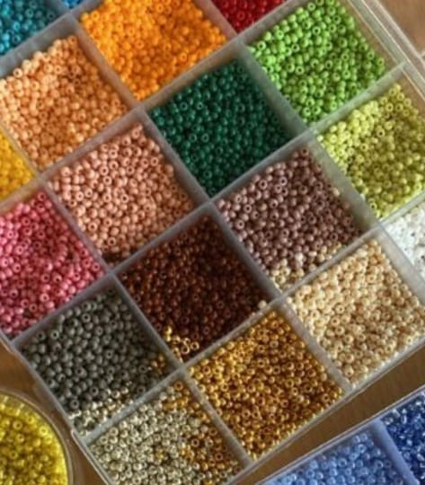
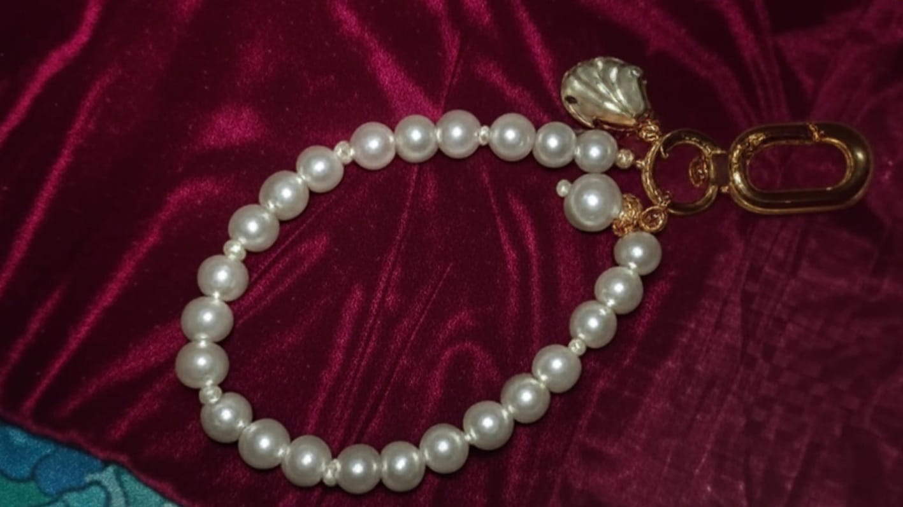

Born and brought up in a Bengali Family in Kolkata. Being a single parent, my mom was facing difficulties in providing me with a better future as she was facing challenges in managing me as a toddler single-handedly. Seeing her struggle, one of my mom's friends advised putting me in a Child Care Institution. After a proper inquiry, my mom's decision was to send me to the CCI, and she did, too. Over the last 16 years I've spent at CCI named Rainbow Home, while grown and received formal education. Like that one afternoon, my results got published for the 2nd PU, and, as usual, I passed with average marks, just an average student. Still, unaware of what's next. But my desire to study further in the social work field, I wanted more real classes, real experience. I shared my decision with my organization, and they referred me to the Welive Foundation, Bangalore. They introduced me to their Care-leaver programme. They equip care-leavers to grow in life by guiding them with education and skills. I agree to be a part of their programme. Finally, the time came to say goodbye to my mom, my hometown, where I made my dearest friends and created the best memories.
With the hope and dream left my hometown and came to Bangalore. Got admission to college, in Bachelor of Social Work with the help of Welive Foundation, and just like that, I began a new chapter of life surrounded by a new culture, language, classmates, and a circle of friends. Continuous 3 years came through various challenging situations to fit in. The core fear of mine was my communication, as I've completed my education in the Bengali medium. I decided to take up the challenge for myself to adapt to a different medium( English) in education. I worked on self-growth and put in efforts to achieve the best version of myself.
I look back on those three years of memories. I see myself sitting in the corner of a room, crying and laughing at the same time during one of my most challenging moments, simply because I couldn’t frame a sentence for a field visit report. At that moment, I felt that I had made the wrong decision by selecting the English medium. I still remember the phases when I struggled with my own thoughts and self-belief. Also sometimes challenging to communicate in the local language as a social work student. But with the help of friends and faculty, I managed to go through my ups and downs.




Handmade crystal bracelets
Recently completed my bachelor’s degree. I also follow my passion of creating beatiful handmade crystal beads bracelets, which became a part of my life since last 2 years. The extended learning process became my strength. It slowly reshaped my inner world, strengthened my self-confidence, and reminded me that growth isn't always visible from the outside.
Looking back, I realize I was never aiming to be the best student, but rather, the strongest version of myself. I’ve lived these years fully, leaving behind milestones of heart-touching memories and a deep love for those who came into my life and shared their journey with me.
From struggling to write a sentence to completing a degree, my story reflects my determination, thirst for learning, and the power to rise above my limitations. No, I’m not perfect, but I am growing stronger every day, constantly challenging my limits.
Life is beyond limits, I'm stepping into another phase of life, one they call “Professional.” Again, surrounded by a new culture, language, and colleagues, and a few friends.